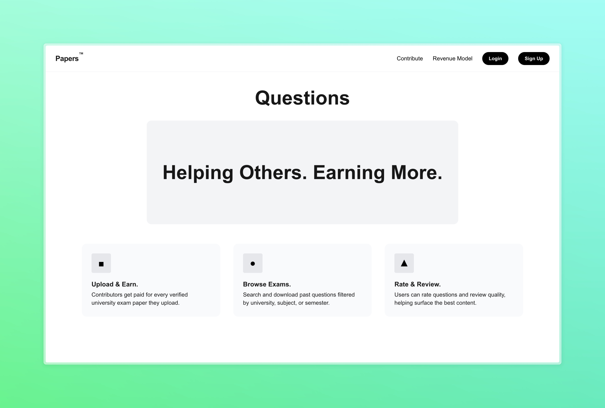
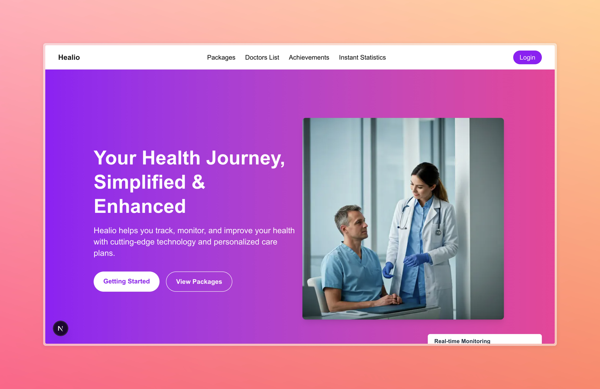
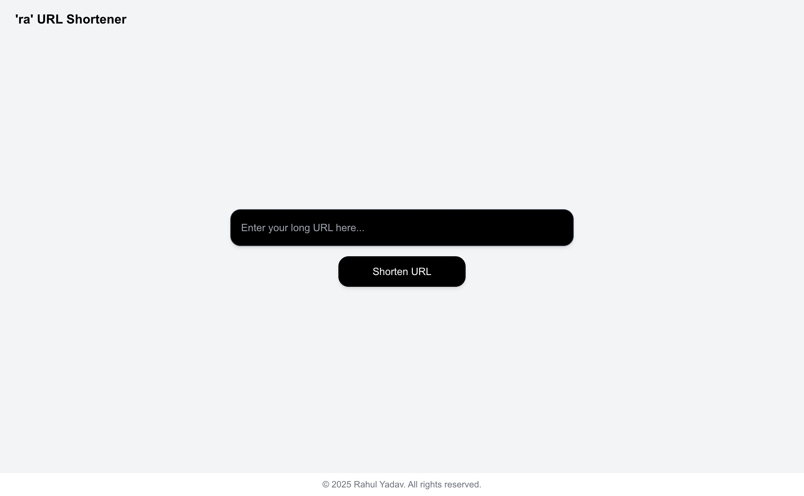
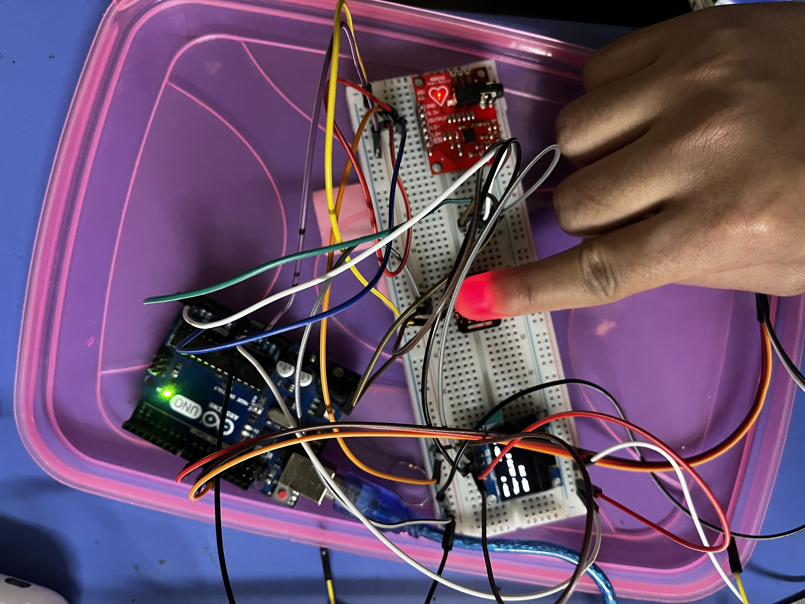

|
I am a final-year Computer Science and Engineering student at VIT Vellore.
Throughout my studies at VIT Vellore,I have I have actively contributed to several projects aimed at advancing health innovation and education, including Project Aero Stream, Uni-Papers. |
{kind=link}
|
My work focuses on developing new AI methods to understand and engineer health systems, with the goal of enabling early disease prevention and fostering collaborative approaches in education to improve quality life. By bridging computation with experimental validation, I aim to create novel technologies for early detection of life-threatening conditions such as cancer makers, early stage infections and to advance educational tools that make learning more accessible and impactful. All of these projects are my original work, and I retain full ownership and authorship of each. † |
|

|
Next.js, Supabase, Google Gemini, Twilio, Vercel Link / code I built Uni-papers.com as an AI-powered academic platform where students can access, upload, and monetize university-level papers. By combining smart search with auto-review tools, the site helps students write better, faster — while earning revenue through paper uploads and Google AdSense integration. |
|  |
Next.js, Azure, Tailwindcss, Supabase, Vercel, Twilio, Custom ML model, GPT code We introduce AeroStream, a contactless disease screening pipeline that analyzes breath signals using large language models, achieving early detection of respiratory and metabolic conditions. This approach improves accessibility and diagnostic speed without increasing hardware or computational cost. |

|
opencv-python, matplotlib, numpy, pandas, torch, torchvision, tqdm, pytesseract, paddleocr code We propose a two-stage OCR pipeline that first detects the presence of text before running full recognition, reducing compute usage by over 70%. This architecture enables scalable, cost-efficient document processing without compromising OCR accuracy. |
|  |
Nextjs, AWS Lambda, S3, DynamoDB, Cloudflare Link / code We developed a high-availability truley free URL shortener using a fully serverless architecture—Next.js on the frontend, with AWS Lambda, S3, and DynamoDB on the backend, secured and accelerated via Cloudflare. The system is optimized for low-latency redirection and infinite horizontal scalability with near-zero infrastructure overhead. |
|  |
Sensors: AD8232 , MAX30102 , BMP180, MLX90614 Other Modules: Raspberry pi 4, Display module code We present a wearable disease detection system leveraging multimodal biosensors and hierarchical ML inference on Raspberry Pi 4. By integrating vitals and breath biomarkers with patient history, our system achieves real-time risk prediction with low-latency, on-device intelligence and cloud-based reporting. |
|
In addition to technological innovation, I am passionate about leadership and business, and strive to create solutions that empower people and improve lives. This project reflects that vision—a wearable disease detection system that brings accessible, real-time health insights to patients and doctors through intelligent, sensor-driven design. |

|
As a Software Engineer at Aarogya, I developed a zero-cost health data platform for rural Nepal, combining React Native and Google APIs to support underserved communities. Beyond engineering, I contributed to business strategy, logistics, and patient outreach—driven by a mission to make healthcare more accessible and impactful. |
|
My education has been driven by a deep curiosity for technology, innovation, and real-world impact. I’ve focused on building a strong foundation in computer science while actively applying my skills through research, projects, and interdisciplinary learning that bridges engineering, healthcare, and entrepreneurship. Looking ahead, I aspire to expand my knowledge and grow through opportunities at some of the world’s leading institutions. |
 |
Vellore Institute Of Technology |